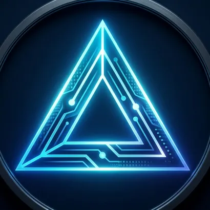

Delta Development
Build and maintain software. Delta plans sprints and coordinates Epsilon workers, each focused on one expert job.
Runs Epsilon.Easter Company
Safe & Secure
Private Local & Cloud AI Agents
Integrations for Home & Office security
Free Virtual Private Network
Your e-server hosts your agents, their work, your home & office security dashboard, media files, advanced network routing and event monitoring with web-hook integrations across all systems.
Delta, Darwin and Diana run in your e-server. Dexter runs locally.

Build and maintain software. Delta plans sprints and coordinates Epsilon workers, each focused on one expert job.
Runs Epsilon.Challenge a design, examine difficult problems and give your agents a second opinion when they need guidance.
Our pro model.Build chatbots and user-facing services with a fast, low-cost conversational agent.
Epsilon withexpert=chat.Run an open-source model on your machine. Choose its name and persona; capability scales with your hardware.
Voice and credit-continuation features are in development.Security, network controls and monitoring in the same system.
The agent-harness is where you talk to your agents and follow their progress, you’ll meet Delta - the front man and primary agent, Darwin a ultimate expert, Diana the chatter box, and Dexter your own personal local agent with self-tuning models, that’s right, not just personally fine-tuned, self-tuning.
View your security dashboard alongside your AI workspace. e-server is built around encrypted access and owner-controlled permissions. Your AI and security data belong to you.
Encrypted access · Owner control
Route your home or office network through a supported device or an available public VPN endpoint. The exit you choose supplies the outward-facing IP address and its associated location.
Available routes depend on your devices and supported endpoints.
The exit you select supplies the outward-facing IP.
Monitor events across your network and APIs. Connect those signals to tasks and agents so a configured workflow can respond with the relevant context.
Follow the response from the initial event through to the work that follows.
A service needs attention.
Attach the relevant event details.
Follow the configured workflow.
Keep the response in view.
Company beta
Two weeks of free AI credits, three beta models and an agent harness tailored to your company.
Tell us what you want to use it for. We’ll reply to arrange access.
contact@easter.companySend the email to complete your request. Access is arranged by Easter Company.
Operated by husband and wife, Owen and Hannah Easter. We build products across engineering, entertainment, education and enterprise, with a focus on productivity, management, AI and gaming.
We also run Easter Co. SMP ↗.